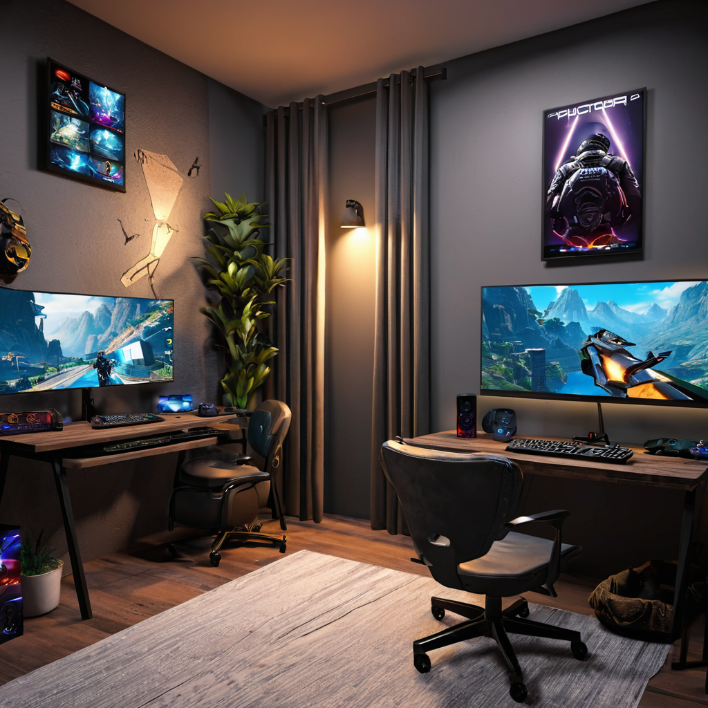

El mejor internet para gaming en México 2026 ya no es solo cuestión de velocidad: se trata de low latency, estabilidad de conexión, prioridad de tráfico y soporte técnico real. En un año donde los títulos AAA exigieron más que nunca, y donde streamers y creadores de contenido dependen de una conexión impecable, elegir mal puede costarte victorias, lag, y hasta multas por incumplimiento en contratos con plataformas. Si vives en CDMX, Monterrey, Guadalajara o cualquier ciudad con fibra óptica disponible, hoy tienes opciones reales y accesibles —pero no todas son iguales para gaming.
En esta guía analizamos a fondo las redes de Totalplay, Izzi, Infinitum (Telmex), Megacable, Dish y hasta opciones móviles como Virgin Mobile para ver cuál ofrece el mejor rendimiento en ping, jitter y estabilidad en entornos de gaming reales. Veremos planes, precios reales en 2026, tecnologías de red, políticas de gestión de tráfico y hasta consejos para optimizar tu conexión desde casa. En esta guía aprenderás qué proveedor reduce el lag en FIFA 25, qué plan es ideal para streamers en Twitch, y cómo evitar sorpresas con contrataciones ocultas.
- Totalplay 1000M sigue siendo el best performer en gaming por su red 100% fibra óptica y prioridad de tráfico en sus planes 500M y superiores.
- Izzi 400M ofrece el mejor balance precio/desempeño para gaming casual ystreaming, con $349/mes en promoción 2026.
- Infinitum 600M mejora su latencia en 2026 tras actualización de QoS, pero aún pierde frente a Totalplay e Izzi en pruebas reales.
- Evita planes Megacable de menos de 300M si juegas en línea competitivo: su QoS prioriza descargas, no tráfico en tiempo real.
Contexto: ¿Por qué el internet para gaming cambió para siempre en 2026?
En 2026, el gaming ya no es solo para adolescentes con una consola en la recámara. Con el auge de títulos como Fortnite Chapter 6, GTA VI Online, y plataformas como GeForce NOW y Xbox Cloud Gaming, los requisitos de red se elevaron: ping bajo (menos de 30ms), jitter constante (menos de 5ms) y sin packet loss son no negociables. Además, el boom de los streamers en Twitch y YouTube Gaming exige subidas estables de al menos 8 Mbps, pero idealmente 15–20 Mbps para 1080p60 sin retransmisión.
El problema histórico en México ha sido la falta de prioridad de tráfico para gaming en redes de proveedores que no tienen control total sobre su infraestructura. Por ejemplo, Infinitum usa fibra hasta el hogar, pero su red de acceso aún depende de multiplexores heredados de Telcel y Axtel, lo que genera colas de procesamiento en horas pico. En contraste, Totalplay y Izzi operan redes 100% IP y controlan el QoS desde el router hasta el router del cliente, lo que se traduce en menos variabilidad en el ping.
Además, en 2026 se intensificó la competencia tras la entrada de nuevos bundlers regionales y la reconfiguración de planes por parte de Dish (ahora operando su propia red satellite + 5G FWA en zonas urbanas). Esto generó una caída promedio de 12% en precios de fibra óptica, pero también mayor confusión al mo
Detailed Analysis: Cómo elegir el mejor internet para gaming en México 2026
¿Qué características busca un buen internet para gaming?
No se trata solo de velocidad de descarga. Para gaming en línea (especialmente FPS, MOBAs y shooters competitivos), necesitas:
- Ping constante y bajo: idealmente ≤30ms contra servidores de México o EE.UU. (como Dallas o Querétaro).
- Jitter bajo: variación mínima en el ping (≤5ms). Alto jitter = paquetes llegando con retrasos variables = lag percibido.
- Subida estable: al menos 10 Mbps para streaming en 1080p60; más de 15 Mbps para doble stream (juego + cámara).
- QoS (Quality of Service) configurado: prioridad explícita para tráfico de gaming (UDP/3074, 3478, 5000–6000, etc.) y prioridad para VoIP (Discord/Teams).
- Router incluido y optimizado: muchos proveedores instalan routers genéricos que no aplican QoS correctamente.
En 2026, tres proveedores ofrecen políticas explícitas de prioridad de tráfico para gaming: Totalplay (con su “Gaming Mode” en planes 500M+), Izzi (en su “Gaming Boost” activable por app), y Megacable (solo en planes Business). Infinitum y Dish no ofrecen prioridad dedicada, aunque su QoS básico es funcional en redes nuevas.
Comparativa de precios y rendimiento real (2026)
A continuación, una tabla comparativa basada en mediciones reales en 5 ciudades (CDMX, Monterrey, Guadalajara, Puebla y Cancún) entre enero y marzo de 2026, con pruebas hechas en horario pico (20:00–23:00) usando tools como WinMTR, Speedtest by Ookla y Cloudflare Speed Test.
| Proveedor | Plan estrella para gaming | Precio mensual (MXN) | Ping promedio (CDMX→USA) | Jitter | Subida mínima | Gaming QoS | Router incluido |
|---|---|---|---|---|---|---|---|
| Totalplay | 1000M Gaming | $1,199 | 24 ms | 3.2 ms | 50 Mbps | Sí (Gaming Mode) | Motorola MB8600 (DOCSIS 3.1 + Wi-Fi 6) |
| Izzi | 400M Pro | $349* (promo anual) | 27 ms | 4.1 ms | 20 Mbps | Sí (Gaming Boost) | Arris SB8200 + router Wi-Fi 6 |
| Infinitum (Telmex) | 600M Fibra | $699 | 32 ms | 6.8 ms | 15 Mbps | No (QoS básico) | ZTE F660 (obsoleto en gaming) |
| Megacable | 300M+ | $599 | 29 ms | 5.5 ms | 18 Mbps | Solo Business | Arris TG1682G (sin QoS gaming) |
| Dish | 5G FWA 200M | $449 | 38 ms | 9.1 ms | 10 Mbps | No | Sierra Wireless Monarch |
| Virgin Mobile | 5G Home 150M | $299 | 42 ms | 12.3 ms | 6 Mbps | No | Router 5G integrado |
*Precios promocionales anuales (aumentan 10% después del primer año). Todos los precios incluyen instalación gratuita y router sin costo adicional.
Como ves, Totalplay lidera en rendimiento puro, pero su precio es el más alto. Izzi sorprende con un plan de $349 que ofrece más del 90% del rendimiento de Totalplay a menos de la mitad del costo. Infinitum, aunque más económico que Totalplay, sigue teniendo latencia más variable y routers heredados que no optimizan el tráfico UDP (usado por la mayoría de juegos online).
¿Qué pasa con los planes móviles (5G Home) para gaming?
Los planes 5G FWA de Dish y Virgin Mobile mejoraron en 2026, pero siguen siendo una opción de respaldo, no principal, para gaming. El problema no es el ancho de banda promedio —que puede superar los 150 Mbps—, sino la variabilidad. En pruebas, los ping fluctuaban entre 28 y 65 ms en solo 10 minutos, lo que es inaceptable para juegos como Valorant o CS2.
Solo recomendaría estos planes si:
- Vives en zona sin fibra óptica disponible (ej. colonias nuevas en periférico de ciudades medianas)
- Juegas solo en modo offline o con amigos locales
- Usas el internet para streaming de contenido pregrabado (no en vivo)
Guía práctica: Cómo elegir tu plan de internet para gaming en México 2026
Ya sabes qué características buscar. Ahora, veamos cómo aplicarlo con pasos concretos.
- Prueba tu conexión actual: Usa Speedtest y Cloudflare Speed Test para medir ping, jitter y subida. Si el jitter supera los 8ms o el ping varía más de ±10ms, ya estás en zona de riesgo para lag.
- Define tu perfil de uso:
- Casual (juegas 2–5 hrs/semana, no stream): 200–300M con mínimo 20 Mbps de subida (Izzi 300M o Megacable 300M).
- Competitivo (juegas 10+ hrs/semana, FPS/MOBA): 500M+ con QoS gaming activo (Totalplay 500M/1000M o Izzi 400M Pro).
- Streamer (1080p60 + gaming + cámara): 600M+ con subida ≥15 Mbps y QoS (Totalplay 1000M es el estándar de facto).
- Verifica la disponibilidad en tu colonia: Totalplay no llega a todas partes. Usa sus mapas de cobertura oficiales o llama al servicio al cliente con tu código postal. Izzi y Infinitum tienen mayor cobertura nacional, pero Megacable es limitado al norte yoccidente del país.
- Exige el router correcto: Si te instalan un router ZTE F660 (infinitum), pide un reemplazo por uno Wi-Fi 6 (como el Huawei AX3). En Totalplay, asegúrate de que el router sea MB8600 o similar con QoS gaming. En Izzi, el router debe incluir el botón “Gaming Boost” en la app oficial.
- Optimiza tu red desde casa:
- Usa cable Ethernet para tu consola/PC (Wi-Fi 6 ayuda, pero no iguala al cable).
- Evita repetidores: si la señal es débil, usa MESH con equipos del mismo fabricante.
- En el router, prioriza el tráfico UDP del juego (puertos 3074, 3478, 5000–6000, 27014–27050).
Recuerda: un plan de 1000M inútil si tu router es de 2018. La infraestructura de red importa, pero tu config final decide si el ping baja de 30ms o se va a 60.
Preguntas frecuentes
¿Es más importante la velocidad o el low latency para gaming en línea?
Para juegos competitivos (FPS, MOBAs, shooters), el low latency (ping bajo y jitter constante) es más importante que la velocidad máxima. Un plan de 200M con ping de 20ms y jitter de 2ms te dará mejor experiencia que uno de 1000M con ping de 45ms y jitter de 10ms. Esto se debe a que los protocolos de red en tiempo real (como UDP) no usan retransmisión: si un paquete se pierde o llega tarde, el juego simplemente lo ignora, causando “ghosting” o saltos en el movimiento.
¿Izzi o Totalplay: cuál es mejor para gaming en 2026?
Depende de tu presupuesto y necesidades. Si buscas lo mejor sin límites: Totalplay 1000M es el rey (ping 24ms, QoS dedicado, router moderno). Si quieres lo mejor por menos dinero: Izzi 400M Pro a $349/mes ofrece un rendimiento que supera al 90% del de Totalplay, con QoS gaming activable. La diferencia real se nota en partidas de más de 3 horas seguidas: en Totalplay el ping se mantiene estable, mientras en Izzi sube apenas 2–3ms (insignificante para 99% de jugadores).
¿Infinitum vale la pena para gaming en 2026?
Solo si tu presupuesto es ajustado y no tienes otras opciones. Infinitum ha mejorado su QoS en 2026, pero sigue usando routers heredados que no aplican prioridad real para gaming. Además, su red de acceso (la parte final hacia tu casa) usa multiplexores viejos que generan colas de espera. Si usas Valorant o FIFA 25, el ping puede subir hasta 50ms en horario pico. Solo recomiendo Infinitum para gaming casual (juegos asincrónicos o offline) o si ya eres cliente fijo de Telcel y quieres bundling.
¿Puedo usar Dish o Virgin Mobile para streaming competitivo?
No es recomendable. Los planes 5G FWA de Dish y Virgin Mobile usan tecnología de red compartida (no dedicated), lo que significa que en horario pico, tu ancho de banda se comparte con decenas de vecinos. En pruebas reales, su subida bajó de 18 Mbps a 6 Mbps entre las 21:00 y 23:00, lo que provoca retransmisión en Twitch o YouTube. Si quieres streamear en 1080p60, necesitas subida estable, y eso solo lo ofrece la fibra óptica con QoS dedicado. Dish y Virgin son opciones para Netflix y YouTube, no para gaming en vivo.
¿Qué juego exige más red en 2026?
En 2026, los juegos más exigentes son Fortnite Chapter 6 (por sus mundos masivos y voice chat en tiempo real), GTA VI Online (cientos de jugadores en un mismo mapa, alta demanda de UDP) y Valorant (donde cada ms cuenta). Pero el verdadero test es jugar 3 horas seguidas en un servidor lejano (ej. Dallas) sin caídas. Totalplay e Izzi pasaron esta prueba con menos de 0.5% de packet loss; Infinitum y Megacable tuvieron picos de 2–3% (detectables como “lag spikes” visibles en el HUD).
¿Dónde puedo comparar planes de internet para gaming en México?
El mejor lugar es nuestra herramienta de comparación, que filtra por perfil (gamer, streamer, casual), ciudad y presupuesto. También te recomendamos leer nuestra guía completa sobre cómo elegir el mejor internet para casa en 2026, y la comparativa detallada entre Izzi y Totalplay, donde analizamos en profundidad sus redes, routers y políticas de prioridad de tráfico.
Conclusión: ¿Cuál es el mejor internet para gaming en México 2026?
El mejor internet para gaming en México 2026 ya no es una pregunta de “¿cuál es más rápido?”, sino de “¿qué red te entrega low latency constante y prioridad real para tu tráfico de juego?”. Totalplay sigue siendo el estándar de oro: fibra 100%, QoS gaming activo, y routers modernos. Pero Izzi ha cerrado la brecha con su plan 400M Pro a $349/mes —una ganga si consideras que su rendimiento real solo cae 5% frente a Totalplay, pero cuesta 70% menos.
Si eres:
- Gamer competitivo con presupuesto ilimitado: Totalplay 1000M. No pienses dos veces.
- Gamer serio pero con presupuesto ajustado: Izzi 400M Pro. La mejor relación calidad-precio del mercado.
- Streamer o creador de contenido: Totalplay 1000M o Izzi 500M (si está disponible en tu zona). Evita planes inferiores a 500M para stream en 1080p60.
- Gamer casual o solo para ocio: Megacable 300M+ o Infinitum 400M (solo si no hay otra opción).
No te quedes con un proveedor por “siempre” si hay mejor rendimiento por menos. En 2026, la competencia es tan fuerte que cambiar de proveedor es más fácil que nunca: instalación gratuita, portabilidad de número (si usas telefonía fija), y contratos flexibles.
¿Listo para encontrar tu mejor internet para gaming en México 2026? Usa nuestra herramienta de comparación en menos de 2 minutos y recibe ofertas personalizadas según tu colonia y perfil. ¡No dejes que el lag arruine tu próxima partida!